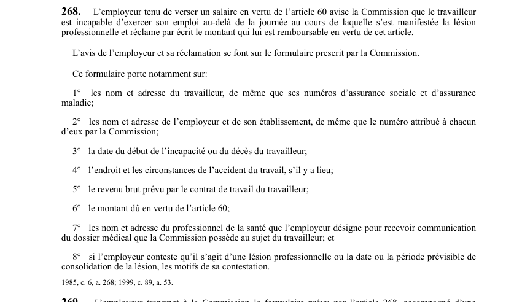

art-268-LATMP : avis de l'employeur et réclamation du salaire de l'article 60
C'est l'employeur, et non le travailleur, qui produit cet avis : celui qui doit verser le salaire prévu à l'art. 60 signale la lésion à la CNESST et réclame par écrit le montant qui lui est remboursable.
- Déclencheur : le travailleur est incapable d'exercer son emploi au-delà de la journée où la lésion s'est manifestée.
- Support obligatoire : le formulaire prescrit par la CNESST sert à la fois d'avis et de réclamation.
- Le formulaire porte sur 8 éléments : identité et adresse du travailleur avec ses numéros d'assurance sociale et d'assurance maladie (1°), identité, adresse et numéros de l'employeur et de son établissement (2°), date du début de l'incapacité ou du décès (3°), endroit et circonstances de l'accident (4°).
- Volet financier et médical : revenu brut prévu au contrat de travail (5°), montant dû en vertu de l'art. 60 (6°), professionnel de la santé désigné par l'employeur pour recevoir le dossier médical (7°).
- Contestation : si l'employeur nie la lésion professionnelle ou conteste la date ou la période prévisible de consolidation, il doit inscrire ses motifs au formulaire (8°).
🌐 LegisQuébec · 📄 PDF officiel (page 67)
Texte officiel
L’employeur tenu de verser un salaire en vertu de l’article 60 avise la Commission que le travailleur est incapable d’exercer son emploi au-delà de la journée au cours de laquelle s’est manifestée la lésion professionnelle et réclame par écrit le montant qui lui est remboursable en vertu de cet article.
L’avis de l’employeur et sa réclamation se font sur le formulaire prescrit par la Commission.
Ce formulaire porte notamment sur:
1° les nom et adresse du travailleur, de même que ses numéros d’assurance sociale et d’assurance maladie;
2° les nom et adresse de l’employeur et de son établissement, de même que le numéro attribué à chacun d’eux par la Commission;
3° la date du début de l’incapacité ou du décès du travailleur;
4° l’endroit et les circonstances de l’accident du travail, s’il y a lieu;
5° le revenu brut prévu par le contrat de travail du travailleur;
6° le montant dû en vertu de l’article 60;
7° les nom et adresse du professionnel de la santé que l’employeur désigne pour recevoir communication du dossier médical que la Commission possède au sujet du travailleur; et
8° si l’employeur conteste qu’il s’agit d’une lésion professionnelle ou la date ou la période prévisible de consolidation de la lésion, les motifs de sa contestation.
Texte de l’article 268 LATMP, extrait de la couche texte du PDF officiel (page 67), sans OCR ni retouche. La capture ci-dessous et le PDF font foi.
{kind=link}

Toucher l'image pour l'agrandir🔗 Ouvrir a cette page : LATMP.pdf : page 67 · texte a jour au 20 février 2024
Voir aussi
Pages qui pointent ici (6)
- art-269-LATMP : délai de transmission du formulaire par l'employeur Recueil législatif
- LATMP Recueil législatif
- LATMP : Chapitre VIII : Procédure (réclamation et décisions) Recueil législatif
- Procédures Recueil législatif
- Processus de réclamation CNESST Droit du travail
- Réclamation employeur (ADR) Recueil législatif